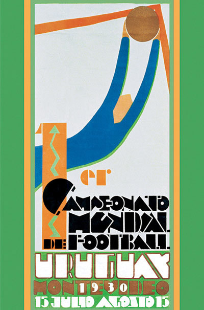
Uruguay 1930
Primer Mundial de la historia
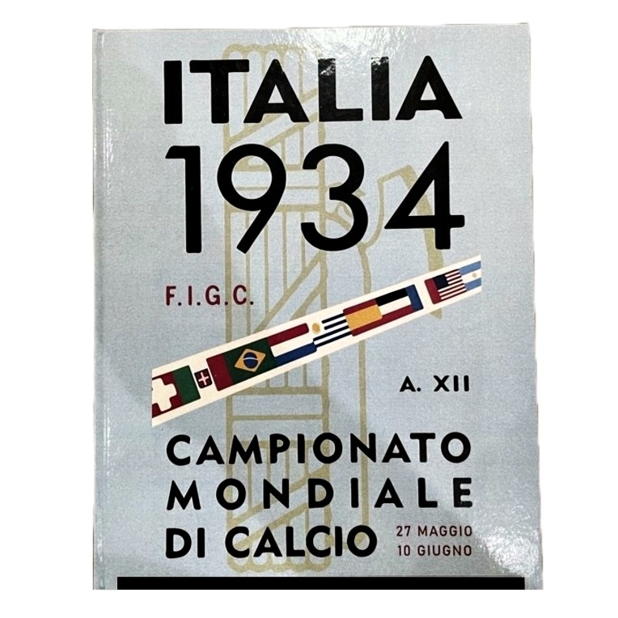
Italia 1934
Campeón: Italia
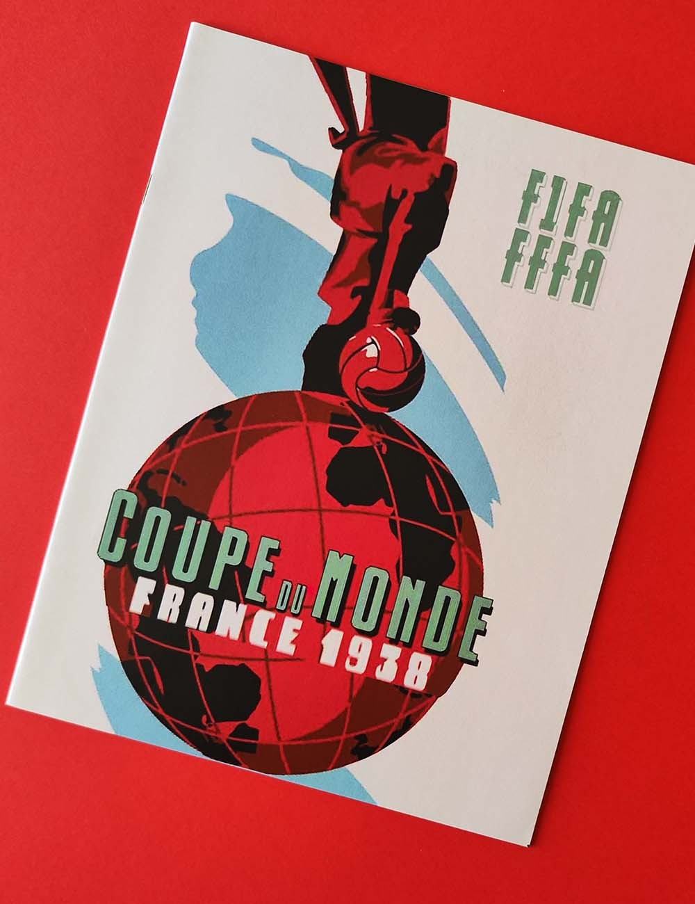
Francia 1938
Campeón: Italia
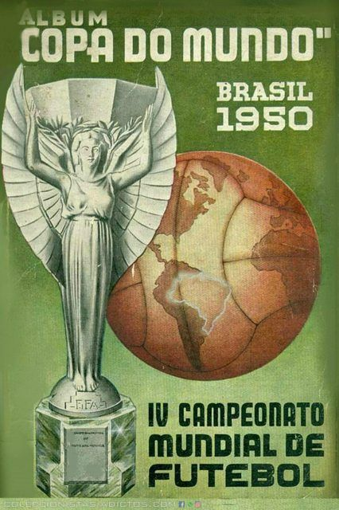
Brasil 1950
Campeón: Uruguay (Maracanazo)
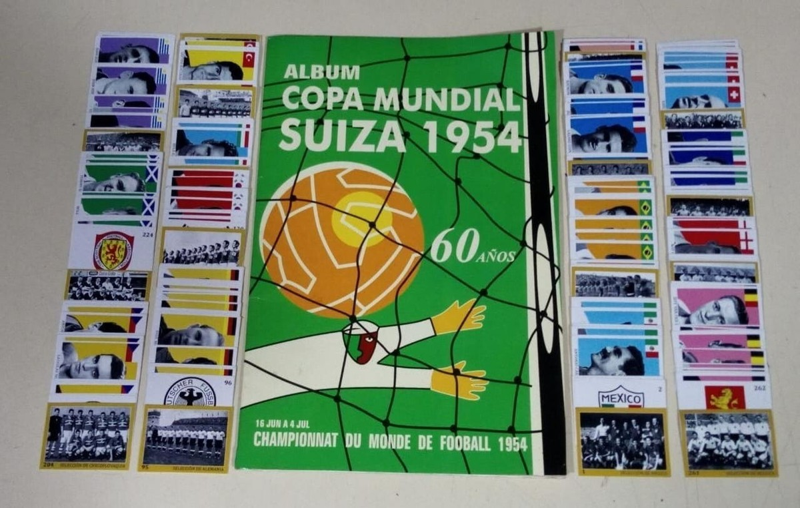
Suiza 1954
Campeón: Alemania Federal
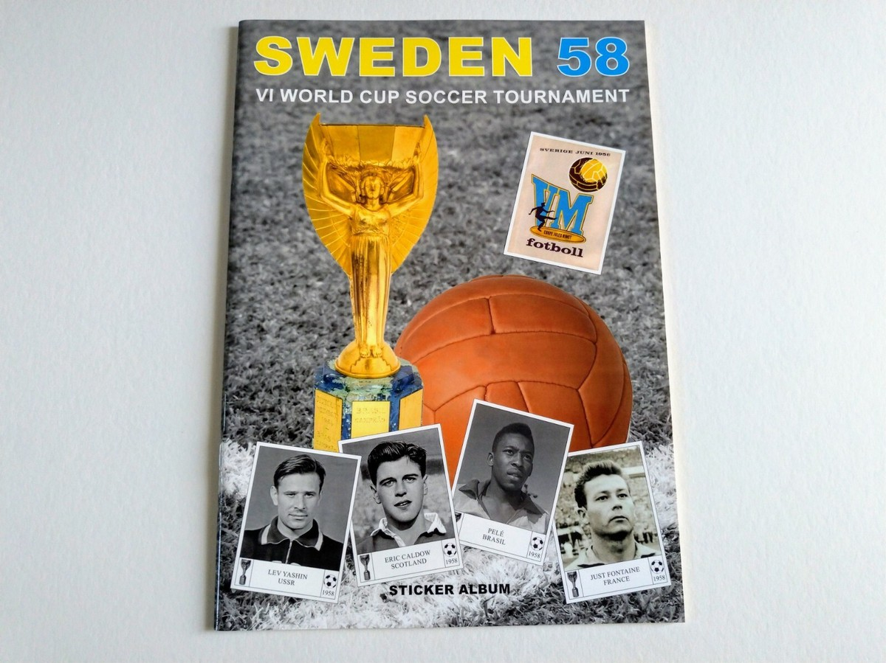
Suecia 1958
Campeón: Brasil • Debut de Pelé
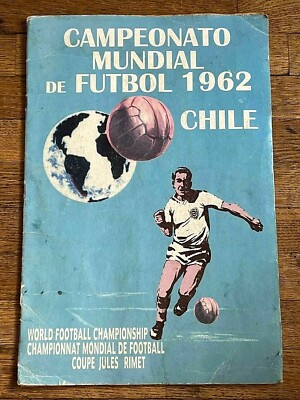
Chile 1962
Campeón: Brasil
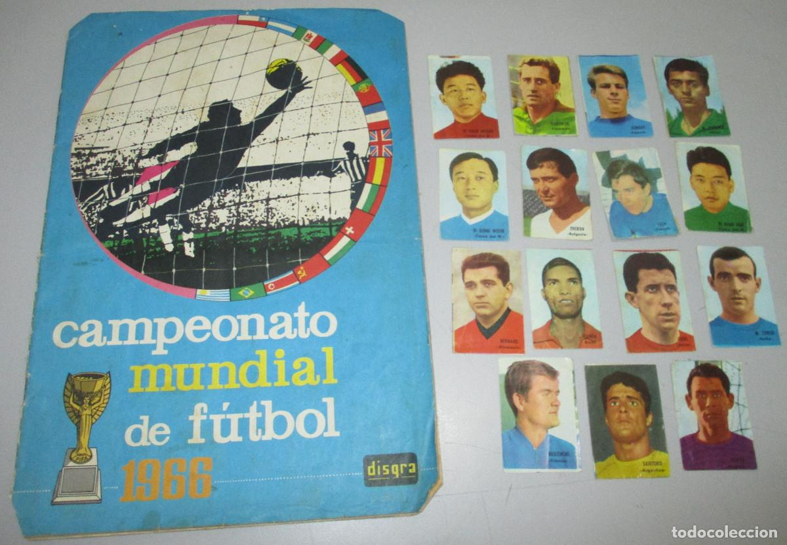
Inglaterra 1966
Campeón: Inglaterra

México 1970
Campeón: Brasil • El Mundial más bonito
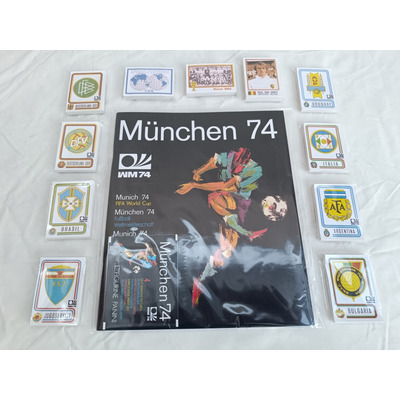
Alemania 1974
Campeón: Alemania Federal

Argentina 1978
Campeón: Argentina
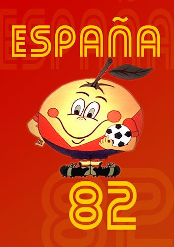
España 1982
Campeón: Italia
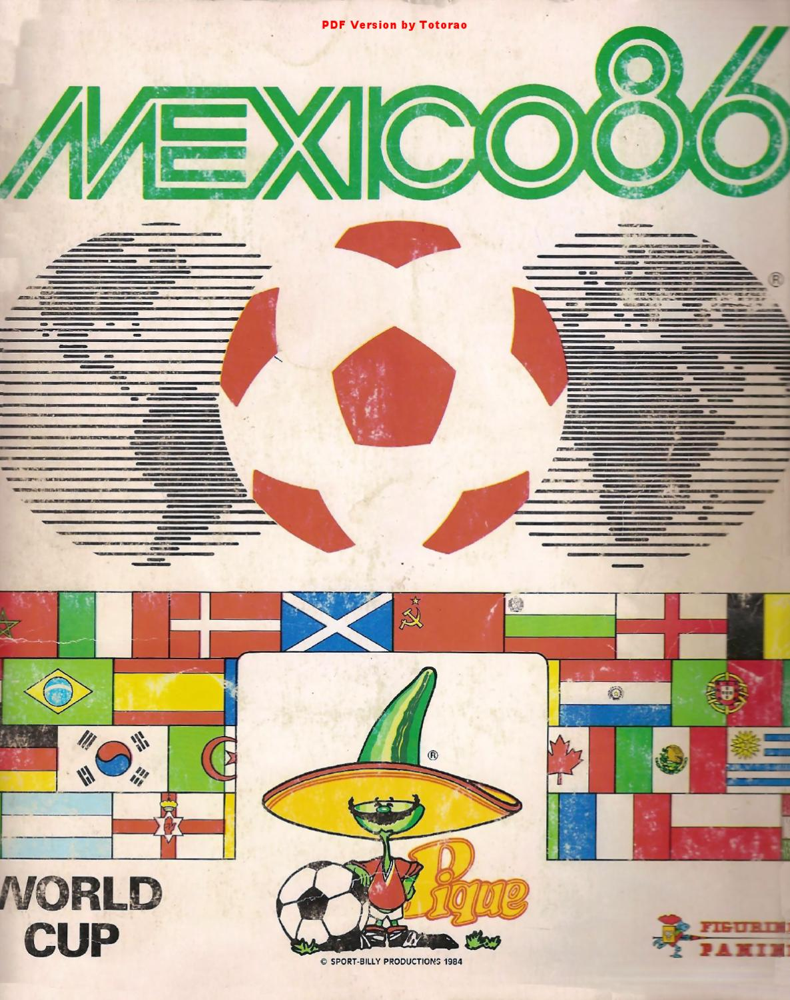
México 1986
Campeón: Argentina • Maradona

Italia 1990
Campeón: Alemania

Estados Unidos 1994
Campeón: Brasil

Francia 1998
Campeón: Francia

Corea y Japón 2002
Campeón: Brasil

Alemania 2006
Campeón: Italia

Sudáfrica 2010
Campeón: España

Brasil 2014
Campeón: Alemania
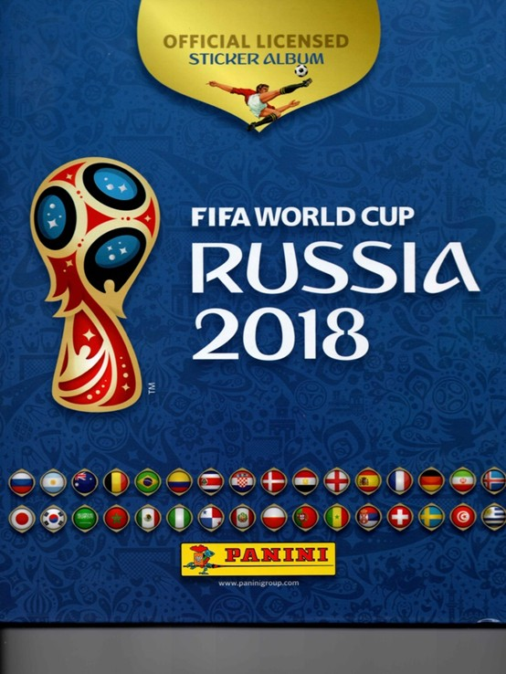
Rusia 2018
Campeón: Francia

Qatar 2022
Campeón: Argentina • Messi
Galería de Estadios Icónicos
Los escenarios legendarios donde se escribió la historia de cada Copa del Mundo

Uruguay 1930
Montevideo • Sede de la primera final
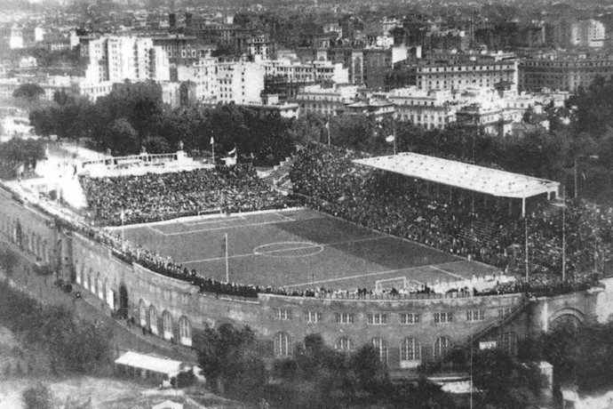
Italia 1934
Roma • Final
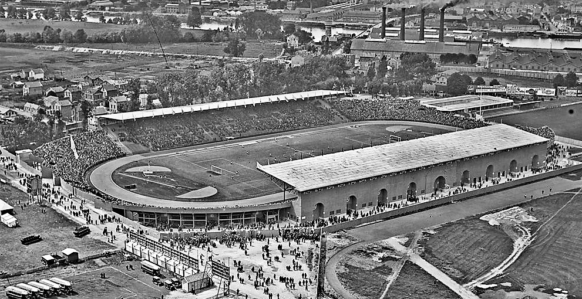
Francia 1938
París • Final

Brasil 1950
Río de Janeiro • Maracanazo
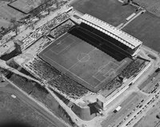
Suiza 1954
Berna • Milagro de Berna

Suecia 1958
Estocolmo • Debut de Pelé
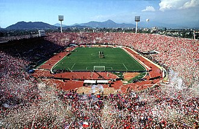
Chile 1962
Santiago
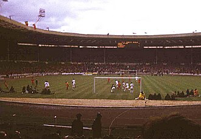
Inglaterra 1966
Londres • Final

México 1970
Ciudad de México • El Mundial más bonito
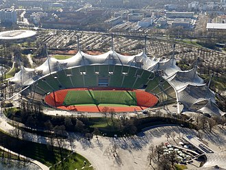
Alemania 1974
Múnich

Argentina 1978
Buenos Aires

España 1982
Barcelona

México 1986
Ciudad de México • Mano de Dios & Gol del Siglo

Italia 1990
Roma • Final

Estados Unidos 1994
Pasadena • Final
.jfif)
Francia 1998
París • Final

Corea y Japón 2002
Yokohama • Final

Alemania 2006
Berlín • Final
.jfif)
Sudáfrica 2010
Johannesburgo • Final
Brasil 2014
Río de Janeiro • Final
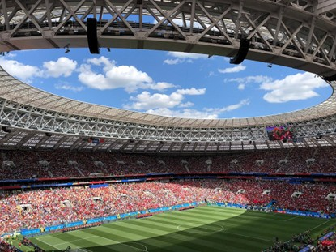
Rusia 2018
Moscú • Final

Qatar 2022
Lusail • Final de Messi